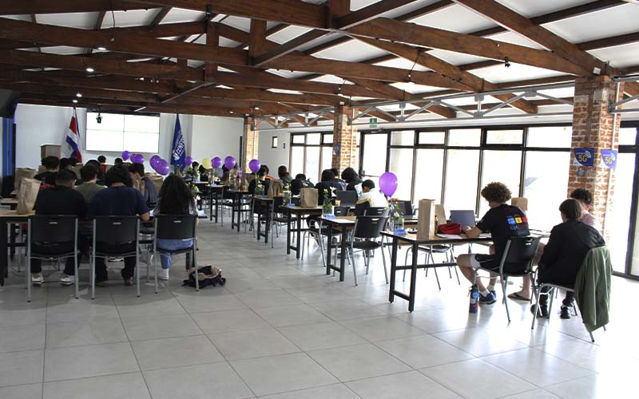

Bienvenido

Bienvenido al Sistema de Gestión de Egresados de la Universidad CENFOTEC. Esta plataforma permite mantener el vínculo entre la universidad y sus egresados, facilitando la gestión de información académica, actividades institucionales, mentorías y oportunidades laborales.
¿Qué ofrece el sistema?
- Registrar información de egresados.
- Administrar carreras académicas.
- Consultar el perfil del egresado.
- Promover actividades y mentorías.
- Publicar oportunidades laborales.